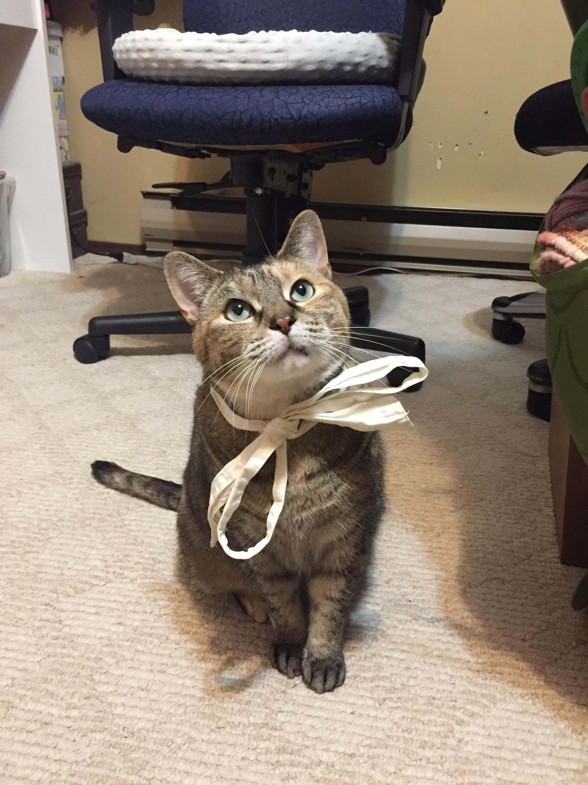

About

Milkbear Desserts is started by Sera: a healthcare worker by day and a self-taught baker by night. She has a passion for tasting and creating food— she loves the ability to try new things and recreate it to share with friends and family.
Snowflake crisp is a confectionery she tried while travelling to Taiwan, but found that it was difficult to find in Vancouver with the same taste and quality ingredients. Recreating it in her kitchen, many friends and family were amazed by the unique snowy and crispy texture, inspiring her to share the confectionery with others!